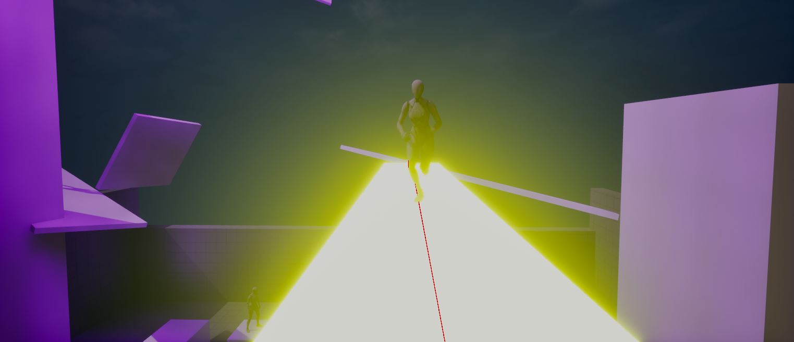

A procedural UE5 parkour-pursuit game where an AI enemy adapts to your specific movement patterns in real time.
Scripted enemy AI in parkour/pursuit games becomes predictable and exploitable once a player learns its patterns — the goal was an opponent that actually adapts to the individual player instead of running a fixed behavior tree.
The fixed training run completed 3M steps on CPU, with reward crossing from deeply negative to a best episode reward of +15.03 — producing a viable, working checkpoint. Currently developing the player mechanics further and tuning the enemy intelligence.